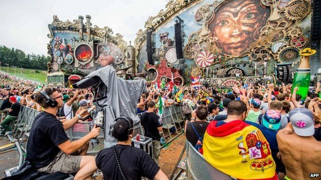
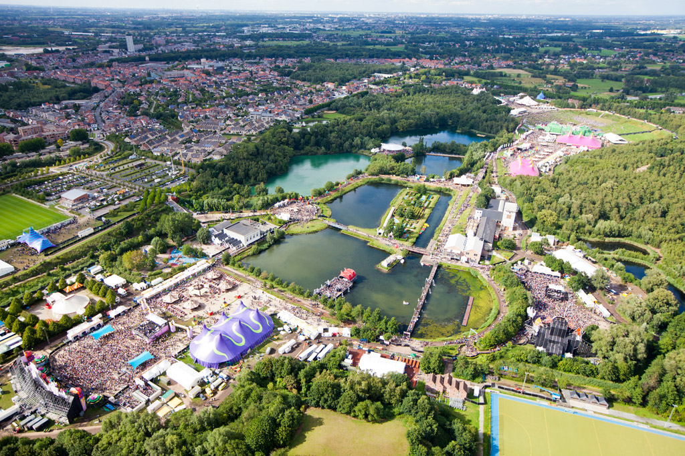
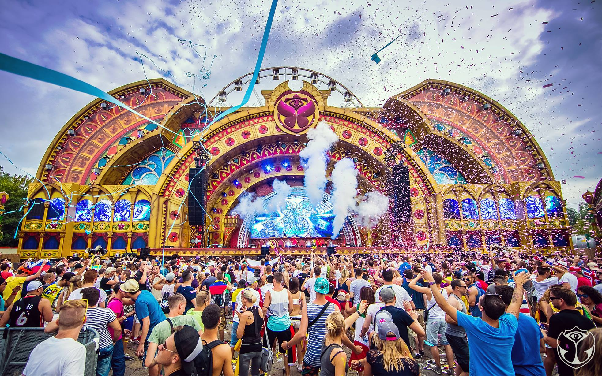
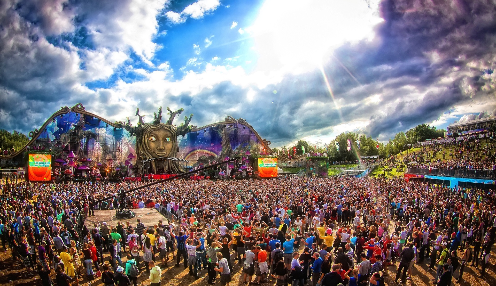

When did the first festival happened
The first edition of the festival took place on August 14, 2005. ID&T organized the festival. Performers included Push (M.I.K.E.), Armin van Buuren, Cor Fijneman, Yves Deruyter, Technoboy, Yoji Biomehanika and Coone.[3]
The second festival, on July 30, 2006, hosted Armin van Buuren, Axwell, Marco Bailey, Fred Baker, David Guetta, Ruthless and DJ Zany. The DJ and producer Paul Oakenfold was also announced on the poster, but canceled at the last moment, as he was on tour with Madonna at the time. Emjay, the producer of 'Stimulate', the anthem of 2006, performed on the main stage with The Atari Babies. The third year, the festival lasted two days for the first time in its history, taking place on July 28 and 29, 2007.
In 2008, the festival took place on July 26 and 27. For the first time, more than 100 DJs participated. The number of visitors exceeded 50,000 for the first time.
For the fifth event, ID&T led to even more venues, one ski, and much more. Sun[who?] has included an "I Love the 90's" stage, where musicians such as Push, Natural Born Deejays and SASH from the dance scene were present. La Rocca performed live at the event for the first time. The special act on the main stage was Moby. Tomorrowland 2009 took place on July 25 and 26 and attracted 90,000 people...

Where did it happened in 2012 festival
Tomorrowland 2012 took place July 27 to 29, 2012, at the De Schorre, a provincial recreation area in Boom, Belgium, 16 kilometers south of Antwerp and 32 kilometers north of Brussels. The line-up consisted of 400 DJs, such as Armin van Buuren, Ferry Corsten, Skrillex, Avicii, Marco Bailey, Skazi, David Guetta, Nervo, Hardwell, Swedish House Mafia, Afrojack, Steve Aoki, Juanma Tudon, Carl Cox, The Bloody Beetroots, Paul van Dyk, Martin Solveig, Chuckie, Fatboy Slim, Dimitri Vegas & Like Mike and Pendulum playing on fifteen stages each day. 185,000 people from over 75 countries around the world were in attendance, with 35,000 of them staying in Dreamville. Because of the enormous success of Tomorrowland and the fact that it is a Belgian festival, ID&T decided to give Belgians an exclusive chance with a pre-sale (80,000 of the 180,000 tickets) on March 24. In less than one day, all of the tickets sold out and at some moments there were 2,000,000 people on the online waiting list. The worldwide sale started April 7. Within 43 minutes, the other 100,000 tickets sold out. In addition to regular tickets, Tomorrowland partnered with Brussels Airlines to provide exclusive travel packages from over 15 cities around the world. Other highlights of the festival were the Cloud Rider, the highest mobile Ferris wheel in Europe,[5] and the fact that 25 airlines were organized to bring spectators to the festival from all over the world.[6]

Do you know where the festival happened in 2013
Tomorrowland 2013 took place on July 26–28 and reached 180,000 attendees at De Schorre in Boom, Belgium. Full madness passes sold out in 35 minutes, and the remainder of tickets sold out in a reported one second.[7] Tomorrowland also offered its Global Journey packages and Brussels Airlines had 140 additional flights from 67 different cities around the world to get festival goers with 214 different nationalities to Boom, Belgium.[8]To celebrate the 10th anniversary of the festival, and to meet the high demand for tickets, the 2014 edition of Tomorrowland would be held over two weekends; 18–20 July and 25–27 July. The line-up for both weekends would be more or less the same. In April 2014, MTV announced that it would produce two hour-long MTV World Stage specials featuring performances from the festival (to be aired in August 2014), and that it would produce a documentary surrounding the 10th anniversary of Tomorrowland.[9] On April 16, composer Hans Zimmer and Tomorrowland announced that they combined forces for the creation of a classical hymn that would premiere during the 10th anniversary edition of Tomorrowland. Veteran DJ Dave Clark, who hosted the second largest stage, believes that “a more diverse lineup that covered a wider range of underground music” was Tomorrowland 2014’s top selling point.[10] 360,000 people have attended Tomorrowland 2014.

Tomorrowland Brasil
As announced on July 20, 2014, by David Guetta's streamed Tomorrowland set to Brazil, and on the Tomorrowland website, the next edition to Tomorrowland Brasil was held on May 1–3, 2015 in Itu, São Paulo. Various DJ's performed such as W&W, Hardwell, Iraj and Naveen Attygalle, Dimitri Vegas & Like Mike, Showtek, Steve Aoki, and many more main stage performers. Some of the stage hosts were Revealed Recordings, Dim Mak, Smash The House, Q-Dance, Super You & Me and many more.
The mainstage again reused the "Book of Wisdom" theme. All 180,000 tickets sold out one day after being announced.
The second edition of Tomorrowland Brasil took place once again at Itu in São Paulo, Brasil during April 21–23, 2016. The lineup included Axwell & Ingrosso, Ferry Corsten, Laidback Luke, Loco Dice, Markus Schulz, Afrojack, Alesso, Armin van Buuren, Chris Lake, Infected Mushroom, Nicky Romero, Dimitri Vegas & Like Mike, Solomun, Steve Angello, and many others.[17]
In November 2016, it was announced that Tomorrowland Brasil would not return due to concerns over the country's economic stability. However, the festival does plan to return in 2018.[18]

MTV to Televise Dance Music Fest Tomorrowland
LONDON — MTV has taken exclusive broadcast rights in international territories to electronic dance music festival Tomorrowland 2014. It will rep the first time that the event has been televised.
Two hours of festival footage will air as part of the “MTV World Stage” franchise, which runs across MTV’s 60-plus international channels in nearly 170 territories. The two, 60-minute “World Stage: Tomorrowland” specials are scheduled to premiere in August.
MTV is also developing a documentary celebrating Tomorrowland’s 10-year history, which is expected to be released in late 2014.
“Tomorrowland is a festival in a category of its own, so we’re excited to bring this content to MTV’s international audiences,” said Bruce Gillmer, exec VP of talent and music programming/events, Viacom Intl. Media Networks

.jpg)
.jpg)

.jpg)
.jpg)